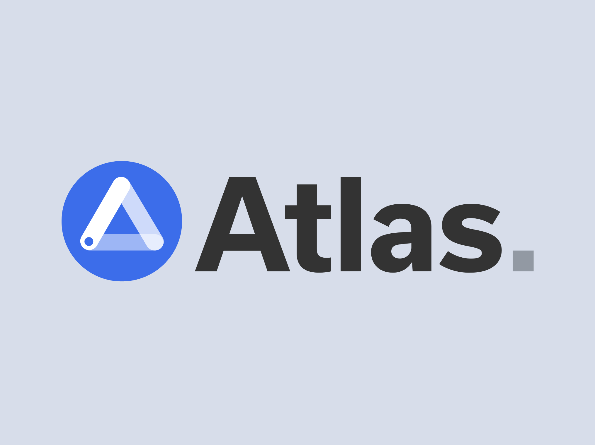

Better Usability for Atlas' Planner
Atlas is a powerful academic planning tool developed by the University of Michigan to help students explore courses, plan their schedules, and make informed decisions about their academic paths. While I contributed to a project that leveraged UX research to improve Atlas's usability and functionality, due to a non-disclosure agreement (NDA), I am unable to share specific details publicly. However, I would be happy to discuss my role and insights further—feel free to email me at yuansq@umich.edu.